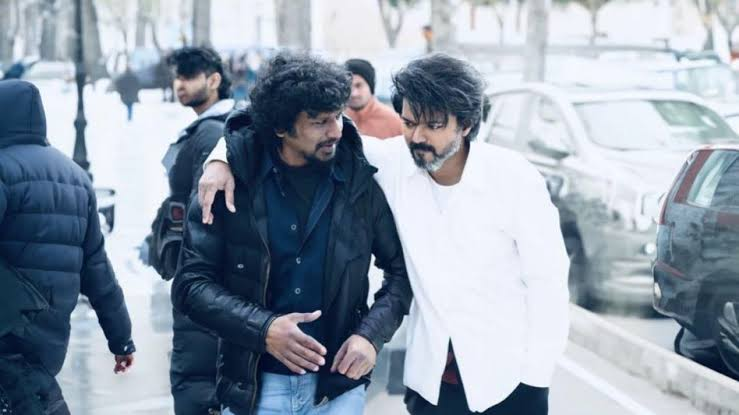
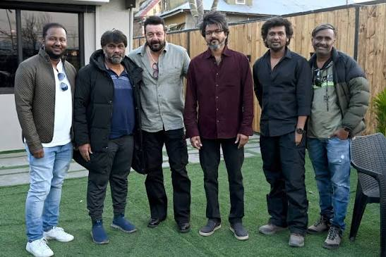

Leo Movie
ABOUT MOVIE
The Plot: Parthiban is a mild-mannered café owner and animal rescuer living peacefully in Himachal Pradesh with his family. His life turns upside down after he fends off a brutal gang in self-defense. His face hits the media, drawing the attention of a dangerous drug cartel led by Antony and Harold Das. They are convinced Parthiban is actually Leo Das, Antony's long-lost son and a former ruthless gangster.
Core Content Themes: Identity, family protection, redemption, and a classic "man with a hidden past" trope loosely inspired by the graphic novel adaptation A History of Violence.
Leo is a weary, 74-year-old tuatara (lizard) who has been stuck as a Florida elementary school classroom pet for decades alongside his turtle friend, Squirtle. Upon learning he might only have a year left to live, he plans a grand escape. Instead, as students take him home over weekends, he ends up listening to their personal anxieties, giving them life advice, and helping them navigate the challenges of growing up.
Movie Spots



Spot Details
The blockbuster action film Leo, starring Thalapathy Vijay and directed by Lokesh Kanagaraj, was filmed across several breathtaking and highly secured locations in India to establish its moody, high-stakes aesthetic
Pahalgam & Anantnag, Kashmir: This serves as the scenic backdrop for Parthiban’s cafe, family home, and initial action scenes.Ramoji Film City, Hyderabad: Used to erect massively expensive, custom sets to film the movie's explosive high-octane climax sequence and factory segments.Chennai, Tamil Nadu: Primary location for indoor studio shoots, song setups, and patch work.Kodaikanal & Talakona: Additional forest landscapes and hilly terrains were used to match the wilderness aesthetics needed for the timeline.
Help
You can book tickets for Leo (2023) or any current Thalapathy Vijay release quickly via leading online ticketing platforms. Streamline your movie plans by reserving seats directly through the BookMyShow or TicketNew portals.For a smooth booking and viewing experience, keep the following tips and steps in mind:Platform Selection: Both major platforms allow you to select your preferred showtimes, compare ticket prices, and pick your exact seats.Location Settings: Ensure your app or website location is set to your current city (e.g., Chennai) so it displays the closest theaters and showtimes.Filter for Subtitles: If you are watching in a non-native language area and need subtitles, check the show details on BookMyShow. Theaters usually update this information once regular screenings begin.Fast Booking: For highly anticipated releases, try booking during advance booking windows to secure the best premium/recliner seats.Could you tell me what city you are currently in and whether you need subtitles? I can help you find the closest showtimes and specific theater options.
Contact
To reach out regarding the 2023 Tamil film Leo (starring Thalapathy Vijay and directed by Lokesh Kanagaraj), you should contact its official production and distribution company, Seven Screen Studio, located in Chennai.Address: #No.37/4, Potters St, Periyapet, Saidapet, Chennai, Tamil Nadu 600015Business Enquiries Email: info7screenstudio@gmail.comScript / Casting Email: scripts.7screen@gmail.comOfficial Website: Visit Seven Screen Studio for more updates.